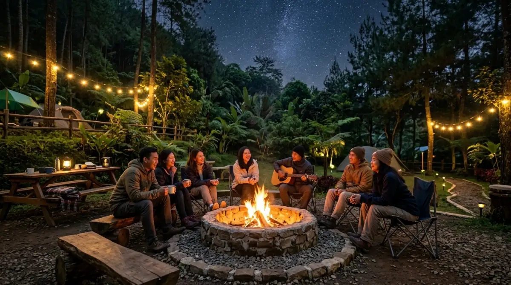

Fasilitas camping ground lengkap — standar keselamatan dan
kenyamanan yang menentukan kualitas pengalaman berkemah.
Fasilitas camping ground lengkap — standar keselamatan dan
kenyamanan yang menentukan kualitas pengalaman berkemah.
Fasilitas camping ground adalah kelengkapan infrastruktur area berkemah yang mencakup area tenda, toilet, air bersih, dan pos keamanan untuk mendukung aktivitas berkemah yang aman dan nyaman.
- Apa Itu Fasilitas Camping Ground?
- Apa Saja Fasilitas Wajib di Camping Ground?
- Fasilitas Standar yang Meningkatkan Kenyamanan Berkemah
- Fasilitas Premium yang Membedakan Camping Ground Unggulan
- Bagaimana Cara Memilih Camping Ground Berdasarkan Fasilitasnya?
- Kesalahan Umum Pengelola dalam Menyediakan Fasilitas
- Perbandingan Fasilitas: Sederhana vs Standar vs Premium
- Apa yang Harus Dibawa Jika Fasilitas Terbatas?
- FAQ
Apa Itu Fasilitas Camping Ground?
Fasilitas camping ground adalah seluruh infrastruktur, sarana, dan prasarana yang disediakan di area berkemah untuk mendukung kegiatan outdoor secara aman, nyaman, dan terorganisir. Fasilitas ini mencakup elemen fisik seperti lahan tenda hingga elemen layanan seperti pos informasi.
Camping ground dengan fasilitas lengkap berbeda dari area berkemah bebas (wild camping) karena menyediakan struktur terkelola yang meminimalkan risiko dan meningkatkan kenyamanan pengunjung dari berbagai kalangan — mulai dari pendaki berpengalaman, keluarga dengan anak kecil, hingga kelompok pelajar.
Secara umum, fasilitas camping ground terbagi menjadi tiga kategori utama: fasilitas wajib (keselamatan dasar), fasilitas standar (kenyamanan umum), dan fasilitas premium (pengalaman tambahan).
Apa Saja Fasilitas Wajib di Camping Ground?
Fasilitas wajib camping ground adalah infrastruktur minimum yang harus tersedia agar area berkemah layak beroperasi dan aman bagi pengunjung.
Area Tenda dan Lahan Datar
Area tenda merupakan fasilitas inti camping ground. Lahan wajib rata, bebas batu besar, memiliki drainase yang baik, dan cukup keras untuk pasak tenda. Standar umum menetapkan minimal 9 meter persegi per tenda keluarga dan 4 meter persegi per tenda solo.
Zona tenda yang baik juga memperhatikan arah angin dominan, jarak aman dari tebing atau pohon besar, serta tanda batas yang jelas antar petak. Beberapa camping ground membagi zona berdasarkan ukuran tenda atau jenis kelompok.
Toilet dan Fasilitas Sanitasi
Toilet bersih adalah fasilitas wajib yang paling berdampak pada kesehatan pengunjung. Standar minimal adalah satu unit toilet per 15 pengunjung. Toilet wajib memiliki sistem pembuangan yang tidak mencemari sumber air dan dilengkapi pencahayaan yang cukup untuk penggunaan malam hari.
Menurut panduan sanitasi outdoor WHO 2022, jarak minimal toilet dari sumber air adalah 60 meter dan dari area tenda minimal 30 meter. Kegagalan memenuhi standar ini berkorelasi dengan meningkatnya kasus diare dan infeksi kulit di kalangan pengunjung camping.
Sumber Air Bersih
Air bersih adalah kebutuhan dasar yang tidak dapat dikompromikan. Camping ground wajib menyediakan sumber air bersih dalam jarak maksimal 200 meter dari area tenda utama. Sumber air dapat berupa mata air terlindungi, sistem perpipaan, atau tangki air yang diisi berkala.
Label standar kelayakan air minum harus tersedia. Jika air tidak layak minum langsung, pengelola wajib menyediakan informasi dan fasilitas pengolahan air seperti titik perebusan atau filter.
Jalur Evakuasi dan Pos Keamanan
Jalur evakuasi yang jelas dan pos keamanan adalah fasilitas keselamatan yang sering diabaikan camping ground informal. Jalur evakuasi wajib ditandai dengan rambu reflektif yang terlihat malam hari dan mengarah ke titik kumpul yang aman.
Pos keamanan minimal satu unit per area camping dengan petugas yang memahami prosedur darurat dasar. Data BASARNAS 2023 menunjukkan bahwa 43% insiden di camping ground Indonesia terjadi di lokasi yang tidak memiliki jalur evakuasi jelas.
Fasilitas Standar yang Meningkatkan Kenyamanan Berkemah
Fasilitas standar camping ground melengkapi kebutuhan dasar dengan sarana kenyamanan yang membuat pengalaman berkemah lebih menyenangkan bagi kelompok yang beragam.
Area Parkir dan Aksesibilitas
Area parkir terorganisir mencegah kekacauan logistik dan memudahkan akses darurat. Camping ground standar menyediakan parkir terpisah untuk kendaraan roda dua dan roda empat, dengan akses jalan minimal cukup untuk kendaraan utilitas berpintu empat.
Aksesibilitas juga mencakup jarak antara area parkir dan zona tenda. Semakin dekat jarak ini, semakin mudah pengunjung membawa perlengkapan berkemah. Beberapa camping ground menyediakan layanan porter atau trolley untuk kelompok dengan bawaan banyak.
Tempat Api Unggun yang Aman
Area api unggun yang ditetapkan secara resmi adalah fasilitas penting untuk mencegah kebakaran hutan. Lokasi api unggun wajib berjarak minimal 5 meter dari tenda terdekat, dilengkapi ring pembatas batu atau logam, berpasir atau beralaskan material tidak mudah terbakar, dan tersedia alat pemadam darurat di sekitarnya.
Camping ground yang tidak menyediakan area api unggun resmi berisiko memicu pengunjung membuat api di lokasi yang tidak aman.
Dapur Komunal atau Area Memasak
Dapur komunal menyediakan meja kerja, kompor gas, dan area cuci piring yang memudahkan pengunjung memasak tanpa harus menggunakan peralatan pribadi sepenuhnya. Fasilitas ini sangat berguna untuk kelompok besar dan keluarga dengan anak kecil.
Area memasak komunal juga membantu menjaga kebersihan zona tenda dari sisa makanan yang dapat menarik satwa liar.
Shelter dan Ruang Bersama
Shelter atau gazebo berfungsi sebagai tempat berlindung dari hujan ringan, area berkumpul, dan ruang sarapan pagi. Fasilitas ini semakin penting di camping ground yang menerima kelompok wisata edukasi atau kegiatan outbound.

Area api unggun resmi di camping ground — fasilitas penting untuk keamanan dan kebersamaan.Fasilitas Premium yang Membedakan Camping Ground Unggulan
Fasilitas premium camping ground mengubah pengalaman berkemah dari sekadar bertahan menjadi menikmati alam dengan kenyamanan maksimal.
Listrik dan Pencahayaan Area
Titik pengisian daya listrik dan pencahayaan area malam hari adalah fasilitas premium yang kian umum di camping ground modern. Listrik memungkinkan pengunjung mengisi daya perangkat komunikasi darurat, kamera, dan lampu tenda.
Pencahayaan area yang baik — idealnya dengan lampu bertenaga surya untuk meminimalkan dampak lingkungan — meningkatkan keamanan pergerakan malam hari tanpa merusak pengalaman malam berbintang.
Penyewaan Peralatan Berkemah
Camping ground premium menyediakan layanan penyewaan tenda, sleeping bag, kompor, dan peralatan dasar lainnya. Fasilitas ini memberikan kesempatan berkemah bagi para pemula yang belum memiliki peralatan sendiri, serta meningkatkan pendapatan bagi pengelola.
Koneksi Internet Terbatas
Meski terdengar kontradiktif dengan esensi berkemah, ketersediaan WiFi terbatas di area resepsionis camping ground meningkatkan keamanan pengunjung dengan memastikan akses komunikasi darurat selalu tersedia, terutama di lokasi dengan sinyal seluler lemah.
Menurut survei Kementerian Pariwisata 2024, 67% wisatawan alam kini mempertimbangkan kelengkapan fasilitas sebagai faktor utama pemilihan lokasi, dengan konektivitas darurat masuk dalam 10 besar prioritas.
Bagaimana Cara Memilih Camping Ground Berdasarkan Fasilitasnya?
Memilih camping ground yang tepat berdasarkan fasilitas memerlukan penyesuaian antara kebutuhan kelompok dan ketersediaan infrastruktur lokasi.
Sesuaikan dengan Profil Pengunjung
Kelompok pemula atau keluarga dengan anak: prioritaskan toilet bersih, air mengalir, dapur komunal, dan shelter. Pendaki berpengalaman: cukup dengan fasilitas dasar asal jalur evakuasi dan pos keamanan jelas. Kelompok outbound atau perusahaan: butuh area berkumpul luas, listrik, dan kapasitas tenda besar.
Periksa Sertifikasi dan Izin Operasional
Camping ground resmi memiliki izin operasional dari pemerintah daerah dan umumnya diperiksa standar fasilitasnya secara berkala. Camping ground yang tidak berizin berisiko tidak memenuhi standar keselamatan minimum, terlepas dari tampilan fisiknya.
Kunjungi atau Minta Foto Fasilitas Terkini
Kondisi fasilitas dapat berubah akibat musim, kerusakan, atau renovasi. Sebelum memesan, minta foto terkini toilet, area tenda, dan sumber air. Ulasan pengunjung terbaru di platform wisata juga memberikan gambaran kondisi aktual yang lebih akurat dari deskripsi resmi pengelola.
Kesalahan Umum Pengelola dalam Menyediakan Fasilitas Camping Ground
Membangun fasilitas camping ground yang baik bukan hanya soal jumlah, tetapi juga kualitas dan penempatan yang tepat.
- Tidak memperhatikan drainase lahan tenda. Lahan yang terlihat rata di musim kemarau bisa berubah menjadi genangan air di musim hujan. Sistem drainase yang buruk merusak pengalaman berkemah dan berpotensi membahayakan kesehatan.
- Menempatkan toilet terlalu dekat area tenda. Jarak minimal 30 meter dari zona tenda sering diabaikan demi efisiensi konstruksi, padahal ini berpengaruh langsung pada kualitas udara dan higienitas area berkemah.
- Mengabaikan penerangan malam hari. Jalur dari tenda ke toilet tanpa penerangan adalah sumber kecelakaan tersering di malam hari, terutama bagi anak-anak dan lansia.
- Tidak menyediakan informasi tertulis di lokasi. Penunjuk arah, aturan berkemah, nomor darurat, dan peta jalur evakuasi wajib terpasang di titik yang mudah terlihat.
- Tidak melakukan perawatan berkala. Fasilitas yang tidak dirawat justru menjadi bencana keselamatan: toilet mampet, pipa bocor, dan jalur evakuasi tertutup semak.
Perbandingan Fasilitas Camping Ground: Sederhana vs Standar vs Premium
| Fasilitas | Sederhana | Standar | Premium |
|---|---|---|---|
| Area tenda rata | Ya | Ya | Ya |
| Toilet | Darurat | Permanen bersih | Bersih + shower |
| Air bersih | Sumber alami | Pipa/tangki | Air minum siap |
| Api unggun | Bebas | Zona resmi | Zona + BBQ |
| Parkir | Terbatas | Terorganisir | Terorganisir + porter |
| Listrik | Tidak | Terbatas | Penuh |
| Penyewaan alat | Tidak | Tidak | Ya |
| WiFi | Tidak | Tidak | Terbatas |
Apa yang Harus Dibawa Jika Fasilitas Camping Ground Terbatas?
Jika camping ground yang Anda pilih hanya menyediakan fasilitas sederhana, persiapan mandiri menjadi kunci kenyamanan dan keselamatan.
- Bawa filter air portabel atau tablet purifikasi jika sumber air tidak terjamin.
- Siapkan trowel kecil dan kantong sampah untuk pengelolaan limbah bila toilet tidak tersedia.
- Bawa lampu kepala atau senter ekstra untuk mobilitas malam hari.
- Pastikan memiliki peta jalur dan kompas fisik jika sinyal GPS tidak tersedia.
Informasikan rencana perjalanan dan lokasi camping ke kontak darurat sebelum berangkat, terlepas dari kelengkapan fasilitas camping ground yang dituju.
Fasilitas camping ground yang baik bukan kemewahan — melainkan standar keselamatan dan kenyamanan yang menentukan kualitas pengalaman berkemah. Lima elemen wajib yang tidak boleh diabaikan adalah: area tenda rata dengan drainase baik, toilet bersih sesuai rasio pengunjung, sumber air yang aman, jalur evakuasi yang jelas, dan pos keamanan dengan petugas terlatih.
Sebelum memilih camping ground, sesuaikan profil fasilitas dengan kebutuhan kelompok Anda. Camping ground sederhana cukup untuk pendaki berpengalaman dengan perlengkapan mandiri, sementara keluarga dan pemula lebih baik memilih camping ground standar atau premium dengan infrastruktur lengkap.
FAQ — Fasilitas Camping Ground
1. Apa fasilitas paling penting di camping ground?
Fasilitas paling penting adalah toilet bersih, sumber air yang aman, area tenda dengan drainase baik, dan jalur evakuasi yang jelas. Keempat elemen ini menentukan keselamatan dasar pengunjung.
2. Bagaimana standar jarak antara toilet dan area tenda?
Berdasarkan panduan sanitasi outdoor WHO 2022, jarak minimal toilet dari area tenda adalah 30 meter dan dari sumber air minimal 60 meter untuk mencegah kontaminasi.
3. Apakah camping ground harus berizin?
Ya. Camping ground yang beroperasi secara komersial wajib memiliki izin dari pemerintah daerah setempat. Izin operasional memastikan fasilitas memenuhi standar keselamatan minimum yang ditetapkan regulasi pariwisata.
4. Apa yang dimaksud camping ground premium?
Camping ground premium adalah area berkemah dengan fasilitas lengkap meliputi toilet ber-shower, dapur komunal, listrik, penyewaan peralatan, konektivitas darurat, dan staf pendukung yang terlatih.